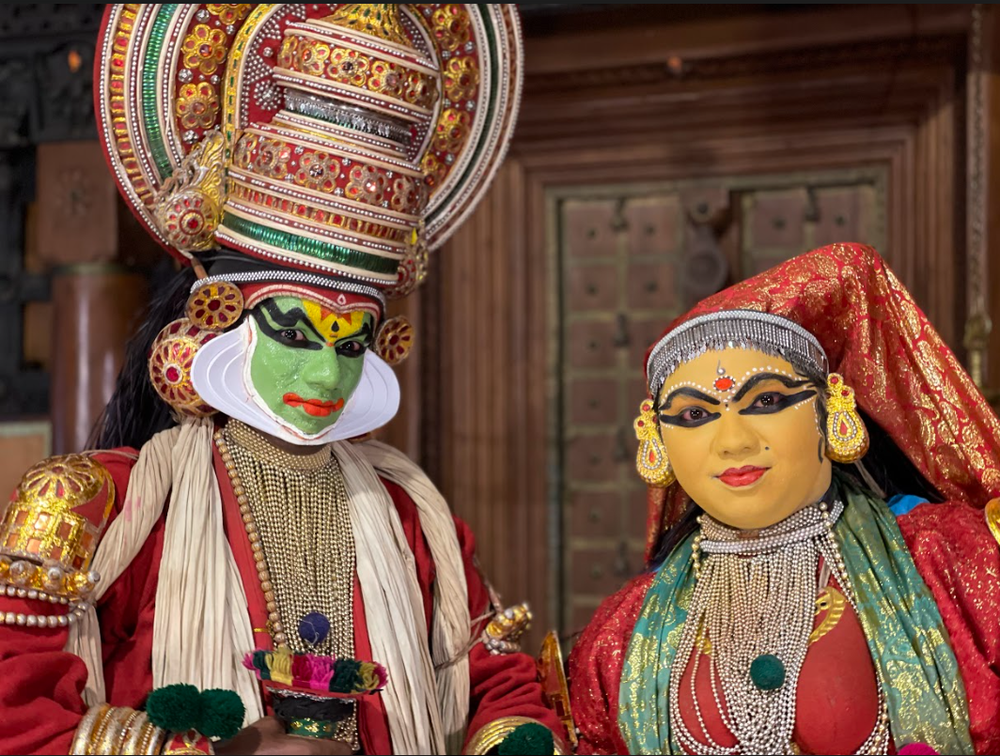

.jpg)
.jpg)

Discover the Magic of Kerala
Experience the perfect blend of nature, culture, and tranquility in the heart of India's southwestern coast.
Kerala, often referred to as "God's Own Country" is a land of diverse landscapes, rich heritage, and warm hospitality. From the serene backwaters to lush hill stations, vibrant festivals to exotic wildlife, Kerala offers an array of experiences that will leave you captivated.
Explore Nature's Bounty
Backwaters and Houseboats
Step onto a traditional Kettuvallam houseboat and let the backwaters cradle you. Glide through the palm-fringed canals, witness the local life, and soak in the spectacular sunsets. The Alleppey Backwaters and Vembanad Lake are must-see destinations.

Hill Stations
Escape to the cool, misty hills of Munnar, Wayanad, and Thekkady. With sprawling tea plantations, cascading waterfalls, and aromatic spice gardens, these hill stations offer a refreshing retreat from the hustle and bustle of city life.

Beaches
Kerala boasts a coastline of golden sands and swaying palms. Kovalam, Varkala, and Marari are idyllic beach destinations where you can relax, swim, and revel in the beauty of the Arabian Sea.
Immerse Yourself in Culture
Kathakali and Classical Arts
Witness the enchanting world of Kathakali, a traditional dance form that tells stories through elaborate costumes and expressive movements. Enjoy classical music performances and explore the vibrant local art scene.
Temples and Palaces
Visit the architectural wonders of Kerala, including the Padmanabhaswamy Temple in Trivandrum, the historic Mattancherry Palace in Kochi, and the ancient temples of Thrissur.

Adventure Awaits
Periyar Wildlife Sanctuary
Embark on a thrilling jungle safari in the heart of the Western Ghats. Encounter elephants, tigers, and a myriad of bird species in their natural habitat.

Trekking and Waterfalls
For the adventure seeker, explore the trails of the Western Ghats. Trek to places like Chembra Peak in Wayanad and enjoy the mesmerizing views. Don't miss the stunning Athirappilly Falls, the 'Niagara of India'.